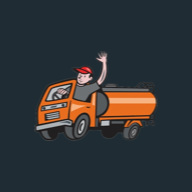

BuenasLeitón
Hoy
Próximos servicios
Cargando…
Servicio realizado
Zonas
Método de entrada
Cargando…
Solicitudes, cotizaciones y lo que está esperando.
Cargando…
Cargando…

Para el que llamó y se le hizo el trabajo, sin cotización de por medio.
Con esto queda el cliente registrado y el recordatorio armado.